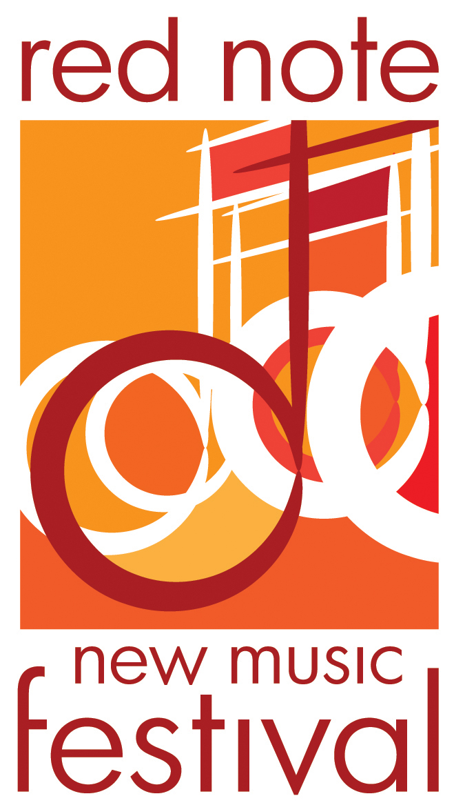

<section class="wrapper">
    <div class="inner">
        <h2>1/19/2016, Tues // Grant:</h2>
        <div class="image left"><p>image from <a href="https://artskc.org/" target="_blank">https://artskc.org/</a></p></div>
        <p>My trip to the <a href="http://worldmusicdays2016.kr/" target="_blank">ISCM World Music Days Festival</a> will be sponsored fully by <a href="https://artskc.org/" target="_blank">ArtsKC</a>'s Inspiration Grant. The press release can be viewed <a href="https://artskc.org/wp-content/uploads/2012/06/INSP-2015-Round-3-Descriptions-FINAL.pdf" target="_blank">here</a>.</p><div class="space1"></div>

        <h2>1/15/2016, Fri // Finalist</h2>
        <div class="image left"><p>image from <a href="http://finearts.illinoisstate.edu/rednote/" target="_blank">http://finearts.illinoisstate.edu/rednote/</a></p></div>
        <p><a href="#"><i>time, unfolding</i></a> (2014) for larger chamber ensemble is finalist in category A of this year's <a href="http://finearts.illinoisstate.edu/rednote/competition.shtml" target="_blank">RED NOTES New Music Festival Composition Competition</a>.</p><div class="space4"></div>
    </div>
</section>
